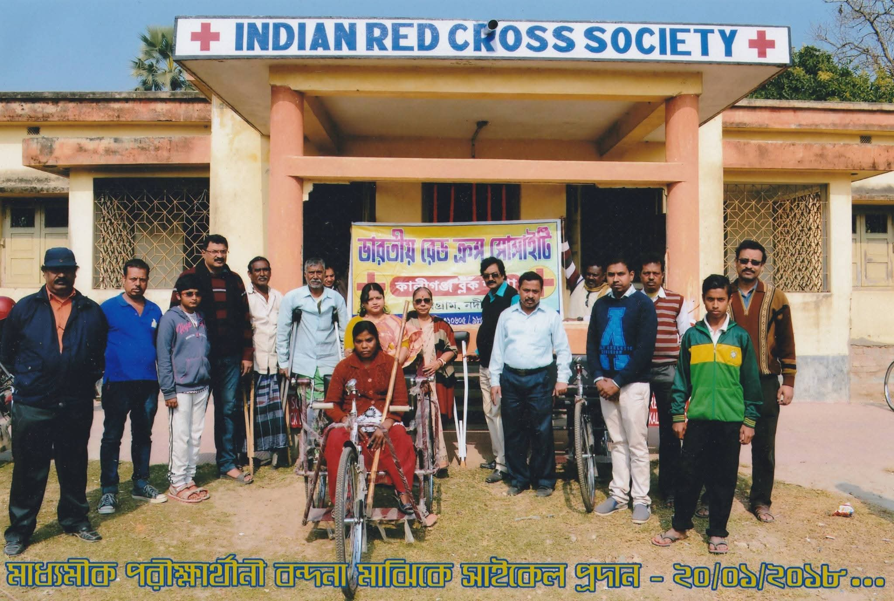

The Indian Red Cross Society Kaliganj Block Branch was established with the noble mission of serving humanity in our local community. Since our inception, we have been dedicated to providing humanitarian aid, disaster relief, and community health services to the people of Kaliganj and surrounding areas.
Our branch operates under the principles of the International Red Cross and Red Crescent Movement, guided by the fundamental principles of humanity, impartiality, neutrality, independence, voluntary service, unity, and universality.
Over the years, we have grown from a small group of dedicated volunteers to a well-organized branch with multiple programs and services that address the diverse needs of our community.
